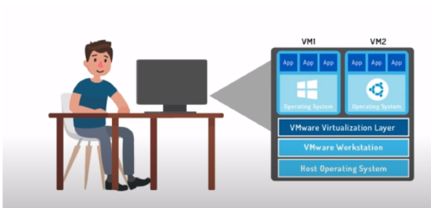

What is Virtualization?
Virtualization creates a layer between hardware component and user. We use virtualization every day when we use
cloud and cloud services also it creates virtual hardware for the VM. Virtual computer needs the same components as
a regular computer. It needs all the components like storage, NIC, processors, RAM etc..Virtualization takes those
physical resources and turns it into virtual resources for VM. Many virtual machines can be created on a single host
OS.

In the above image the computer is running two VMs namely Windows and UBUNTU system. These VMs are on top of the
virtualization layer being managed by VM ware Workstation. Virtualization increases efficiency and multitasking
which is much essential for the developers
Benefits of Virtualization:
Manageability:
An ability to copy, isolate, and move virtual machines.
Sustainability:
Less hardware and electricity is utilized.
Availability:
An ability to clone, snapshot and run redundant virtual machines.
Security:
Separating VMs from one and another isolating them from the core system isolation of VMs and applications.